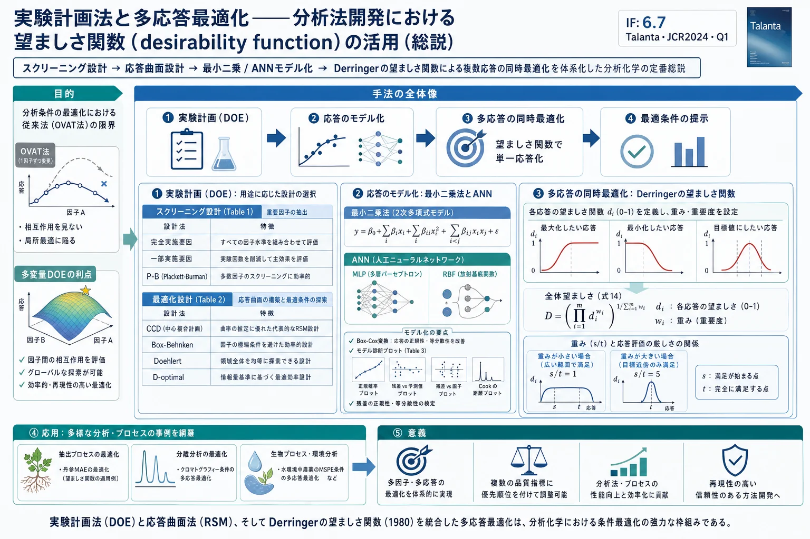

実験計画法と多応答最適化——分析法開発における望ましさ関数（desirability function）の活用（総説）

<!-- Vera Candioti L, De Zan MM, Cámara MS, Goicoechea HC. Experimental design and multiple response optimization. Using the desirability function in analytical methods development. Talanta 124 (2014) 123-138. doi:10.1016/j.talanta.2014.01.034 の全訳密度日本語版。 -->
補足（本サイトでの位置づけ）: 本論文は特定の生薬を扱う研究ではなく、分析法開発の最適化に用いる実験計画法（DOE）・応答曲面法（RSM）・望ましさ関数（desirability function）の理論と実務を体系化した「教科書的総説」 である。当サイトが扱う漢方・生薬 QC 論文の多く——たとえば参芪扶正注射液の QbD（Plackett-Burman＋Box-Behnken＋モンテカルロ）、サフランの ANN 応答曲面法、周天方の AHP-CRITIC 抽出最適化——は、いずれも本総説が整理する枠組みの上に立っている。とくに本論文は応用例として 丹参（Salviae Miltiorrhizae radix・タンジン）のマイクロ波抽出（MAE）で水溶性フェノール酸と脂溶性タンシノンを同時抽出し、9成分の抽出収率を望ましさ関数で一括最適化した事例 を明示的に取り上げており（クリプトタンシノン・タンシノンI・タンシノンIIA の応答曲面まで図示）、生薬の抽出条件最適化に望ましさ関数がどう使われるかの直接的な手本になる。生薬 QC のメソッド開発論文を読むうえで「なぜ Box-Behnken なのか」「望ましさ D とは何か」「重み s/t と重要度 r の違い」を押さえる基礎文献として位置づけられる。
書誌情報
- 原題: Experimental design and multiple response optimization. Using the desirability function in analytical methods development
- 和題（本稿）: 実験計画法と多応答最適化——分析法開発における望ましさ関数の活用
- 著者: Luciana Vera Candioti, María M. De Zan（責任著者）, María S. Cámara, Héctor C. Goicoechea（責任著者）
- 所属: アルゼンチン・リトラル国立大学 生化学・生物科学部（分析開発・ケモメトリクス研究室 LADAQ／医薬品品質管理研究室 LCCM, Santa Fe）／CONICET（国立科学技術研究会議, Buenos Aires）
- 責任著者: M. M. De Zan（mmdezan@fbcb.unl.edu.ar）, H. C. Goicoechea（hgoico@fbcb.unl.edu.ar）
- 掲載誌: Talanta 124 (2014) 123–138
- DOI: 10.1016/j.talanta.2014.01.034
- 受理経緯: 2013年11月6日受付 / 2014年1月21日改訂受付 / 2014年1月23日受理 / 2014年2月12日オンライン公開
- © 2014 Elsevier B.V.
- キーワード: 実験計画法（experimental design）／応答変換（response transformation）／多応答最適化（multiple response optimization）／望ましさ関数（desirability function）
- 雑誌インパクトファクター: 6.7（Talanta・JCR2024・Q1。出典により6.1とも記載）
要旨（Abstract）
分析法開発の分野で複数の応答を同時に最適化しなければならない場合の応答曲面法（RSM）の適用に関する総説を提示する。応答変換（response transformation）、多応答最適化（multiple response optimization）、最小二乗（least squares）・人工ニューラルネットワーク（ANN）によるモデル化などのいくつかの重要な論点を論じる。分析法開発、とくに望ましさ関数を用いた多応答最適化手順の文脈で、最新の分析応用を提示する。
1. 序論（Introduction）
規制当局の品質要求の高まり、試薬の高コスト、分析プロセスに影響する変数の多さから、分析法の開発・バリデーション手順は単純な作業とはみなせない。この文脈で「最適化（optimization）」という語は、分析プロセスの性能改善、すなわち最良の応答が得られる条件の発見を指すと考えられる[1]。分析化学において最適化は、可能な限り最良の応答を生じるために各因子がとるべき値を見出す重要な段階である。実験室で開発中の、あるいは公定法・標準法から改変した、あるいは科学文献から得た分析法において、良好な性能を保証しつつ行わねばならない。
この文脈で、多変量実験計画法（design of experiments, DOE） は重要な論点である。一変量手順（驚くべきことに今なおルーチンのメソッド開発で使われている）より時間・労力・資源が少なく、実験数を最小化しつつ大量の情報収集を容易にするからである[2]。DOE と応答曲面法（RSM）はプロセスの開発・改善・最適化に有用であることが証明され[3]、分析応用[4–7]・工業[8–12]・生物プロセス[13–16]で広く用いられてきた。
原著 Fig. 1 のフローチャートに見られるように、DOE と RSM は主に 分析分離（analytical separations）と抽出手順（extraction procedures） に適用される。最初のスクリーニング研究の後、応答曲面設計を構築してデータを得、それを一般に最小二乗フィッティング（例外的に ANN）でモデル化する。多数の応答を最適化する場合（適切な基準に従い）、望ましさ関数（desirability function）が最も普及した道具 である[17]。本総説では、応答変換と多応答最適化という、これまでの総説で広くは扱われてこなかった論点を中心に、分析法最適化段階における DOE の役割を分析する。
2. 実験計画の目的と方法論
分析化学における実験計画の主要な役割はメソッド最適化に関わり、その主目的は可能な限り最良の分析性能を生じる実験条件を発見することである[1]。メソッド最適化には2段階がある：(a) スクリーニング段階（多数の因子を調べ、重要変数に有意な効果をもつものを特定）、(b) 最適化段階（因子をさらに調べ最良の分析条件を決定）。加えて、実験計画はメソッドバリデーションにおける頑健性評価（分析条件の小変化が応答に及ぼす効果の検討）や、較正・バリデーションセットの構築にも用いられる[18]。
2つの最適化戦略が区別される：一変量（univariate） と 多変量（multivariate）。前者は一度に1因子のみを変え（OVAT: one variable at a time）、他因子を一定に保つ。この古典的手順は因子間の相互作用を考慮せず、因子数が増えると実験数が問題になり、探索する実験ドメインも多変量法より狭い。
多変量戦略は、あらかじめ定めた数の実験で複数因子を同時に調べ、関与する全因子の水準を同時に変える。Leardi の優れたチュートリアル[19]で論じられた多変量法の利点：
- (a) 実験ドメイン全体で系を大局的に把握でき、応答と実験条件を関係づける数学モデルを構築できる。モデル係数の推定後、実験ドメインの任意点の応答を予測できる。
- (b) OVAT 法より実験数が少なく、コスト・労力・時間を削減。
- (c) 因子間の相互作用と応答との非線形関係を調べられる。
- (d) 一般に研究ドメインの絶対的最適を見出せる（OVAT は初期条件に依存する局所最大しか見つけられない）。
- (e) 各実験点で収集した情報の質を てこ比（leverage） で把握できる。
正しい実験計画のため、多くの著者は以下のステップを推奨する[3, 20]：
2.1. 問題へのアプローチ
扱う課題と最適化目的を明確にする。実験計画は適切に定義された分析問題の解を見出す道具である。研究目的を明確に特定・規定し、実験の時間・コストも評価する。
2.2. 応答変数の選択
メソッドの分析性能評価に必要な情報を提供できる変数を最適化対象に選ぶ。この変数を 応答（response） と呼び、目的により複数の応答を観察する必要がありうる。応答の例：分析対象回収率（真度）、濃縮係数、ピーク面積（感度）、ピークテーリング、クロマトグラフィー分離度（選択性）、相対標準偏差（精度）、移動/保持時間（効率）など。
2.3. 因子とその水準の選択
プロセスに影響しうる全因子を注意深く検出・検討する。各因子の実験ドメインを定義し、制御・測定の方法を確立する。因子は量的・質的・混合関連（溶媒量など）に分けられる。因子数が多くなりうるため、1つ以上の応答に有意な影響をもつ実験変数・相互作用を決定するスクリーニング実験が必要。スクリーニング設計では通常、因子を2水準（−1, +1）で調べる。水準間の範囲は、研究対象系で因子を変えられる最も広い区間で、文献情報や先行知識に基づき選ぶ。
2.4. 実験計画の選択
各段階に最良の実験計画を選ぶ際の考慮点：(a) 目的（問題の種類・既知情報）、(b) 調べる因子・相互作用の数、(c) 各設計の統計的妥当性・有効性、(d) 操作・コスト・時間の制約、(e) 各設計の理解しやすさ・実装の複雑さ。
原著 Table 1：スクリーニング段階で用いる設計
| 設計 | 因子の種類 | 因子数 | 分解能 | 実験数 | 推定できる効果 | 直交性 | 回転可能性 |
|---|---|---|---|---|---|---|---|
| 2水準完全実施要因（2-FFD） | 数値/カテゴリ | 2≤k≤5 | – | 2ᵏ（複製込みで 2ᵏ+1） | 主効果・相互作用（2次・3次・k因子） | あり | あり |
| 2水準一部実施要因 | 数値/カテゴリ | >4 | III または >IV | 2ᵏ⁻ᵖ | R=III（主効果が2因子交互作用と交絡）／R=IV（主効果が3因子交互作用と交絡、2因子交互作用同士が交絡）／R=V（主効果が4因子交互作用と、2因子交互作用が3因子交互作用と交絡） | あり | あり |
| Plackett–Burman（P–B） | 数値/カテゴリ | N−1 | III | N（4の倍数） | 主効果が2次以上の交互作用の（分数）と交絡 | あり | あり |
（k＝因子数、p＝独立生成子の数。）
2.5. 実験の実施と応答の決定
考慮点：(a) 観測と誤差は独立な確率変数であるべき、(b) 1日/1作業列でできる量を超える実験はブロック化（各ブロックが別の日/作業列に対応、ブロック効果を考慮）、(c) まず因子効果の推定に計算を適用。推定には常に誤差が伴い、効果が有意か決めるには効果の標準偏差（効果の標準誤差）を知る必要がある。
ランダム誤差 はプロセスの共通原因によるもので、研究因子で説明できない応答の観測ばらつきを表す。非研究因子の効果や操作者誤差を含みうる。後2者のばらつきが大きいと真の因子効果を区別できないため、操作者誤差は小さく保つべき。ランダム誤差の推定法：①設計の中心点等を複製して分散推定（中間精度条件下で測定。併行精度条件だと実験誤差を過小評価し、多くの効果を誤って有意とみなす恐れ）、②あらかじめ無視できると宣言した効果（ダミー因子・因子交互作用の効果）から推定、③事後に無視できると宣言した効果から（Dong や Lenth のアルゴリズム。非有意効果の分布に基づく）[21]。
3. 設計（Designs）
3.1. スクリーニング設計
完全実施要因・一部実施要因・Plackett–Burman 設計（いずれも各因子2水準）が、経済的かつ効率的なため因子選択段階で最も広く使われる（Table 1）。一部実施要因設計は、完全実施要因 2ᵏ を 2ᵏ⁻ᵖ に分割（p＝独立設計生成子数）して、少ない実験で比較的多くの因子を評価できる。例：6因子なら、半分割 2⁶⁻¹=32、1/4分割 2⁶⁻²=16、1/8分割 2⁶⁻³=8 実験が可能。ただし一部実施要因設計では主効果と交互作用の一部が交絡して別々に推定できない。
3.2. 最適化設計
2次応答曲面をモデル化できる。最も広く使われるのは3水準完全実施要因・中心複合・Box–Behnken・D-optimal・Doehlert 設計。
原著 Table 2：最適化段階で最も一般的な応答曲面設計
| 設計 | 因子の種類 | 因子水準 | 実験数 | 直交性 | 回転可能性 |
|---|---|---|---|---|---|
| 中心複合（CCD） | 数値/カテゴリ | 5 | 2ᵏ+2k+Cp | あり/なし | あり/なし |
| Box–Behnken（BBD） | 数値/カテゴリ | 3 | 2k(k−1)+Cp | あり | あり |
| 3水準完全実施要因（3-FFD） | 数値/カテゴリ | 3 | 3ᵏ | 完全直交 | なし |
| Doehlert 行列（DMD） | 数値/カテゴリ | 因子ごとに異なる | k²+k+Cp | なし | なし |
| D-Optimal | 数値/カテゴリ | モデルごとに異なる（不規則な実験ドメイン） | 全組合せから選んだ部分集合 | なし | あり |
（CCD は α=(f)^(1/4)〔f＝要因点数〕なら回転可能、Cp≈a√f+4−f なら直交。k＝因子数。）
中心複合設計（CCD） は、2水準（−1, +1）要因点（Fp）、軸上「星」点（Sp）、全因子0の中心点（Cp）からなる。Sp は1因子のみ ±α、他は0。α 値が Sp の位置を決め、通常1〜√k で変わる。α=1 は面心中心複合設計、α=√k は超立方体ドメイン内に点を配置。回転可能設計 は α=(f)^(1/4)（f＝Fp数）で達成され、実験者が事前に望ましい応答の位置を知らないため有用（予測分散が設計空間全体で安定）。ただし k>3 では回転可能設計は大きな α を要し実務的でないため、より狭く許容可能な領域で分散を安定させる「準回転可能」な球面設計が好ましい。3因子の球面 CCD では、2次項を効率的に推定するモデル構築に最低15実験を要する。
混合物設計（mixture design）: 因子が混合物の成分でその水準が互いに独立でない場合に使う。ドメインは成分数と同数の頂点をもつ正則図形（次元＝成分数−1）。3成分なら正三角形（頂点＝単一成分100%、辺＝2成分混合、内部点＝3成分混合）。simplex 格子・simplex 重心設計を選び、通常は内部に追加点で拡張。モデルは独立変数用の多項式と異なり Scheffé 多項式（線形・2次・完全3次・特殊3次）を使う[22]。
4. モデル化（Modeling）
4.1. スクリーニングのモデル構築
各応答の統計解析の一般手順：(1) 因子効果を推定し符号・大きさを検討、(2) 初期モデル構築〔式(1)〕、(3) 統計検定、(4) 非有意変数を除いてモデル精緻化、(5) 残差解析でモデル妥当性・仮定を確認[22]。各因子の効果は、正符号実験の平均応答と負符号実験の平均応答の差として推定（符号化設計で）。応答 y は線形統計モデルで記述できる：
$$ y = \beta_0 + \sum_{i=1}^{k} \beta_i x_i + \sum_{1 \le i \le j}^{k} \beta_{ij} x_i x_j + \varepsilon \tag{1} $$
β₀＝全体平均効果、βi＝因子 xi の効果、βij＝xi・xj の ij 交互作用効果、ε＝ランダム誤差成分（測定誤差・装置背景ノイズ・非研究変数の効果など。平均0・分散 σ² の正規分布と仮定、複製実験で推定）。
効果の有意性評価には 正規/半正規確率プロット が普及。無視できる効果は平均0・分散 σ² の正規分布で直線上に並び、有意効果は非ゼロ平均で直線から外れる。選んだ変数を分散分析（ANOVA）で検討し、必要なら非有意変数を除去してモデルを縮小[22]。ANOVA はモデル評価の仮説を検定：
$$ H_0: \beta_i = \beta_{ij} = \dots = \beta_k = 0 \qquad H_1: \beta_k \ne 0 \text{（少なくとも1つの } k \text{ で）} \tag{2} $$
H₀ 棄却は、回帰変数の少なくとも1つがモデルに有意に寄与することを意味。ANOVA は総平方和 SST を、モデル由来 SSR と残差/誤差由来 SSE に分割。モデルの統計的有意性は F 検定で判定（F₀ > F(α,k,n−k−1) なら H₀ 棄却）。因子数が多すぎる場合は経験・知識で各因子を適切に選ぶ。例：白ワイン香気中の硫黄化合物を超音波支援乳化-分散液液マイクロ抽出＋GC-MS で分析するメソッド開発[24]では、6因子中の相互作用のため、1因子のみ固定でき他は次の最適化手順に持ち越された。
4.2. RSM のモデル構築
最適化段階の応答データ収集後、各応答に2次多項式を当てはめる：
$$ y = \beta_0 + \sum_{i=1}^{k} \beta_i x_i + \sum_{i=1}^{k} \beta_{ii} x_i^2 + \sum_{1 \le i \le j}^{k} \beta_{ij} x_i x_j + \varepsilon \tag{3} $$
β₀＝定数項/切片、βi・βii・βij＝1次・2次・交互作用項の係数。一般に高次交互作用は非有意で主効果と混同しうるため、2次交互作用のみ考慮。モデル式は通常 最小二乗（LS）法 で当てはめ（残差 ε を最小化する係数を見出す）。ANN は非線形多変量モデル化のもう一つの知的道具[25]。2因子最適化なら RSM は3次元空間の立体曲面として応答を可視化でき、3因子以上なら2因子で描画し他は一定（曲面の一部のみ表示）。等高線マップも可視化に有用。
4.2.1. モデルの評価
LS 回帰では、誤差の期待値が0近傍・独立・等分散・近似正規と仮定するが、応答は常に誤差を伴い測定されるため、パラメータ推定 β̂ と予測応答 ŷ(x) は実験選択に依存するランダム変動をもつ。これらの仮定は確認すべき[23]。2次モデルの多重回帰当てはめが有意かを ANOVA で検定（H₀: 全係数=0）。回帰が有意かつ選んだ信頼水準で適合欠如が非有意なとき、モデルは満足とされる。
ただし有意モデルでもデータ変動を正しく説明するとは限らないため、残差プロット・決定係数 R²・自由度調整済み R²adj（モデルが説明する分散の割合）の評価が必要。
原著 Table 3：モデル診断プロット
| プロット | 評価対象 | 期待される応答 | 不適切な結果 | 推奨対応 |
|---|---|---|---|---|
| 正規確率 | 残差の正規分布 | 直線 | S字曲線 | 応答変換 |
| 残差 vs 予測値 | 範囲内で分散一定 | ランダム散布 | 分散拡大 | 応答変換 |
| 残差 vs 実施順 | 実験中に応答に影響した変数 | ランダム散布 | トレンド | 実験のランダム化・ブロック化 |
| 残差 vs 因子 | モデル未説明の分散の因子水準依存 | ランダム散布 | 顕著な曲率 | 新しい回帰モデル |
| 外部スチューデント化残差 | 異常ランの同定 | 外部残差 ≤3.5 S | 外部残差 >3.5 S | 特別原因があれば外れ値を棄却可 |
| てこ比（leverage） | モデル当てはめへの大きな影響点 | 点てこ比 <2×平均 | 点てこ比=1 | 点/複製の追加 |
| DFFITS | 各点の予測値への影響 | <2√(P/N) | >2√(P/N) | 点/複製の追加 |
| DFBETAS | 各点の回帰係数への影響 | <2/√N | >2/√N | 点/複製の追加 |
| Cook's 距離（CD） | 当該ケース除外時の回帰変化量 | 点CD <2×平均CD | 点CD >2×平均CD | 特別原因があれば外れ値を棄却可 |
（P＝モデルパラメータ数、N＝実験数。）高てこ比・高 Cook's 距離の外れ値は、より良い当てはめのため除去が推奨される。残差の非正規性・不等分散を軽減する3法：(a) ノンパラメトリック法、(b) 一般化線形モデル（GLM）、(c) 正規性要件を満たす変換応答の解析。本総説は入手・実用性から (c) に焦点。
4.2.2. 応答変換（Response transformation）
提案モデルの一般評価後、データ変換で系への当てはめが改善する場合がある。典型的に（a）応答範囲がかなり大きい、（b）モデル仮定（正規性・等分散性）が満たされない場合。応答がポアソン・二項・ガンマ分布に従い分散が平均に依存する場合、「角型」「S字型」の異常な残差グラフを生じる。変換は全応答データに数学関数を適用し、ANOVA を妥当にする新データ y' を生成。
Box-Cox 変換[27]（べき乗変換ファミリー）：
$$ y' = \frac{y^\lambda - 1}{\lambda} \quad (\lambda \ne 0) \tag{4} $$ $$ y' = \log_{10} y \text{ または } \ln y \quad (\lambda = 0) \tag{5} $$
λ は特定の変換を定義するスカラーパラメータ。データは正値である必要があり、そうでなければ定数 c を加えて (y+c)>0 とする。最良の λ は、残差平方和の自然対数が生成する曲線の最小点（残差の散らばりが最小のデータセットを生む λ）で見出す（原著 Fig. 4）。この λ 周りの95%信頼区間が1を含めば特定の変換は不要。この手順は区間 [−3, +3] の連続スペクトルを許す。例（Fig. 4）：クロマトグラフィー分離度をカラム温度・緩衝剤濃度・有機溶媒比・移動相 pH の4変数の関数としてモデル化。残差正規プロットが S字を示したため、λ=−3〜3 で変換を評価し、最良 λ=−0.83（95%CI −0.25〜−1.44）→ 実務的に λ=−1（逆数変換）を採用[28]。変換応答にモデルを当てはめた場合、予測値は正しい解釈のため逆変換すべき。
4.2.3. モデルの個別係数の評価
各モデルで各項の有意性を ANOVA で評価（変数水準の組合せ変化による応答変動 vs ランダム誤差の変動）。非有意項を除去して系を記述する最簡モデルを得る。戦略は3つ：後退消去（backward elimination）（完全モデルから最も非有意な項を逐次除去。最も安全）、前進選択（forward selection）（応答と最高相関の項から追加。共線性が高いと問題）、ステップワイズ回帰（前進・後退の組合せ）。Leardi のチュートリアル[19]の、信頼区間ブラケット付き棒グラフで各項の相対的有意性を視覚化する方法も簡便。適合欠如を再度 ANOVA で評価。最終モデルは線形・線形＋交互作用・2次・3次のいずれか。
4.2.4. 人工ニューラルネットワーク（ANN）
ANN は非線形情報のモデル化に特化した情報処理ケモメトリクス手法。多層フィードフォワード網（MLP）[30, 31]が予測・分類に多用される。3層構成：入力層（研究因子数と同数のニューロン）、隠れ層（可変数、最適化対象）、出力層（各応答に1ユニット）。隠れ層でシグモイド関数 f(x)=1/(1+e⁻ˣ) が一般的で、隠れニューロン j の出力 Oj：
$$ O_j = f\!\left[\sum_{i=1}^{m}(s_i w_{ij} + w_{bj})\right] \tag{6} $$
si＝上位層ニューロン i からの入力、wij＝結合重み、wbj＝バイアス、m＝上位層ニューロン総数。入力・出力層は一般に線形関数。ANN の利点は、モデルの構築に必要な解析関数の正確な形を知る必要がなく、関数型もパラメータ数も与える必要がないこと（LS 回帰との主要な違い）。原著 Fig. 5 は3因子 CCD データのモデル化 MLP（隠れ4ニューロン）の例。
RBF（動径基底関数）網[34]：単一隠れ層にガウス伝達関数、線形活性化出力層。MLP に比べノイズデータへの頑健性・高速学習が利点[35]。近赤外での土壌有機物・血中グルコース・魚製品水分の解析[36–38]、毛状根バイオマス収量の最適培養条件予測[39]に応用。m 番目隠れニューロンの出力：
$$ \text{out}_m = \exp\!\left(-\frac{1}{2s^2}\|s_i - c_m\|^2\right) \tag{7} $$
RBF 網の出力：
$$ \text{out}_i = w_0 + \sum_{m=1}^{M} w_m \exp\!\left(-\frac{1}{2s^2}\|s_i - c_m\|^2\right) \tag{8} $$
w₀＝バイアス、wm＝重み。重みは出力の平均二乗誤差最小化で調整。RBF は収束保証があり、重みは w = (HᵀH)⁻¹Hᵀr〔式(9)〕で与えられ、設計行列 H の要素は H(i,m)=exp(−‖si−cm‖²/2s²)〔式(10)〕。
4.2.5. 最適位置（Optimal location）
最適位置はモデルの図的表現で見出す：(a) 3次元空間の応答曲面、(b) 等高線グラフ（一定応答線）。応答は2因子の関数として表される。最適値は最大・最小・特定値のいずれかで、視察で見出す。3因子超では非描画因子を一定にするため実験ドメインの一部しか見えず最適が図に見えないため、固定変数の値を慎重に選ぶ。等高線プロットの重ね合わせで妥協領域を視覚探索するが、3因子超では困難。より形式的には、当てはめ多項式を各因子で微分し導関数を0とおいて 停留点（stationary point） を見出す（最大・最小・鞍点）。停留点が望む最適でないなら 稜線解析（ridge analysis）（制約付き最適化）が有効。低次元（4パラメータ以下）ならグリッド探索も可能。停留点の信頼領域を計算すべき（推定の質の目安。応答を損なわず因子水準を変えられる範囲がわかる）[41]。
5. 多応答最適化（Multiple response optimization）
最適化が複数応答を含む場合、各応答を別々に最適化することはできない（変数数と同数の解が集まってしまう）。プロセス/分析法の最適化では、全体解を最適領域に含め、各変数の基準への一定の適合をもたらす 妥協解（compromise solution） を見出さねばならない。
5.1. 図的最適化
各応答の等高線プロットを重ね合わせて共同解を推定（応答・因子数が多くなければ）。2因子×2応答でのみ有用。応答が3以上だと等高線プロット法は解釈困難で適用不可。各応答の最適が異なる領域にあると、全応答を同時に満たす条件を図的に見出すのは厄介（最適領域が離れ交差しないほど困難）[3, 4]。代替は多応答問題を単一応答問題に変換すること。
5.2. 望ましさ関数（Desirability function）
1980年、Derringer と Suich が 望ましさ関数[17]を開発し、多応答最適化の解の一つを提示（以降、産業界で広く使用）。多くの特性をもつ製品/プロセスの品質は、1つでも「望ましい」限度外なら完全に許容不可、という考えに基づく。全応答の基準適合を保証しつつ、望ましい共同応答で最良の妥協値を提供する条件を見出すことが目的。多応答を単一応答に変換し、個別応答を合成関数に束ねて最適化する。
まず、当てはめモデルと最適化基準を用い、各応答 ŷi に個別望ましさ関数 di(ŷi) を作る。di は常に0〜1（0＝望ましくない応答、1＝完全に望ましい理想応答、中間値＝より/より少なく望ましい応答）。許容応答範囲 (Ui−Li)（Ui＝上限、Li＝下限）内で、採用する最適化基準により異なる関数を構築。
最大化する場合:
$$ d_i(\hat{y}_i(x)) = \begin{cases} 0 & \hat{y}_i(x) < L_i \\[4pt] \left(\dfrac{\hat{y}_i(x) - L_i}{U_i - L_i}\right)^s & L_i \le \hat{y}_i(x) \le U_i \\[4pt] 1 & \hat{y}_i(x) > U_i \end{cases} \tag{11} $$
s は「重み（weight）」と呼ぶべき乗値で、ŷi が最大に近いことの重要度を決める。
最小化する場合:
$$ d_i(\hat{y}_i(x)) = \begin{cases} 1 & \hat{y}_i(x) < L_i \\[4pt] \left(\dfrac{U_i - \hat{y}_i(x)}{U_i - L_i}\right)^t & L_i \le \hat{y}_i(x) \le U_i \\[4pt] 0 & \hat{y}_i(x) > U_i \end{cases} \tag{12} $$
t は最小への近さの重要度の重み。
目標値 Ti が最も望ましい場合:
$$ d_i(\hat{y}_i(x)) = \begin{cases} 0 & \hat{y}_i(x) < L_i \\[4pt] \left(\dfrac{\hat{y}_i(x) - L_i}{T_i - L_i}\right)^s & L_i < \hat{y}_i(x) < T_i \\[4pt] 1 & \hat{y}_i(x) = T_i \\[4pt] \left(\dfrac{\hat{y}_i(x) - U_i}{T_i - U_i}\right)^t & T_i < \hat{y}_i(x) < U_i \\[4pt] 0 & \hat{y}_i(x) > U_i \end{cases} \tag{13} $$
因子水準も最適化手順に含められ、実験領域内の適切な条件を優先できる。原著 Fig. 6 は各最適化基準の望ましさ関数と s/t による変化を図示。重みが小さいと応答が目標近傍に厳密である必要がなく広範囲で満足な望ましさに達し、大きな s/t は応答が目標に非常に近くない限り望ましさが極めて低くなる。
n 変数（因子・応答水準）を望ましさ関数に変換後、それらを 全体望ましさ（Global Desirability, D） に束ねる：
$$ D = \left(d_1^{r_1} \times d_2^{r_2} \times \dots \times d_n^{r_n}\right)^{\frac{1}{\sum r_i}} = \left(\prod_{i=1}^{n} d_i^{r_i}\right)^{\frac{1}{\sum r_i}} \tag{14} $$
ri＝各変数の他に対する 重要度（importance）。Design Expert ソフト[42]では、重要度は最も重要でない変数の1から最も重要な5まで。D が0以外なら全変数が望ましい値をもつとみなせ、1応答でも完全に望ましくない（di=0）と D=0。最適化は D の最大化を意味。
訳者補足（重み s/t と重要度 r の違い）: 混同しやすいが、重み s/t は「個々の応答」内で「目標にどれだけ厳密に近づけたいか」を決める形状パラメータ（式11-13の指数）、重要度 r は「複数の応答どうし」で「どの応答を優先するか」を決める式14の指数である。前者は1つの di 曲線の反り具合、後者は D への各 di の寄与度を制御する。
D=1 を目指すのではなく、全目標を満たす良い条件集合を見出すのが目的（D は Li/Ui 限度の設定と重み/優先度に完全依存）。D は実験空間でグリッド計算により図示でき、応答が許容される因子水準組合せが複数見つかると D 曲面の平坦な頂上として表れ、この場合「頑健な解が得られた」といえる[47]。最終ステップは、当てはめモデルで最適因子組合せの各応答値を予測し、分析ランで検証すること。
実例（著者らの研究）: 7種の非ステロイド性抗炎症薬（ピロキシカム・スリンダク・ケトプロフェン・ナプロキセン・ジフルニサル・インドメタシン・ジクロフェナクナトリウム）と抗痙攣薬カルバマゼピンの同時定量法開発で、SPME による前濃縮・クリーンアップ工程を最適化[48]。20実験の CCD を構築、全分析対象のピーク面積（感度指標）と分析時間を多項式に当てはめ ANOVA で検証。9応答を望ましさ関数で同時最適化（分析時間最小化＋ピーク面積最大化、小面積の分析対象〔カルバマゼピン・ピロキシカム〕を優先）。全体望ましさ0.941 に到達。
望ましさ関数アプローチの成功は用いるモデルの質に完全依存し、統計的に検証済み（適合欠如検定の確率 >0.05）のモデルのみを使うべき。留意点：(a) D は1次元最適化だが D の最大探索が常に容易とは限らない、(b) D は微分不可能なので代替アルゴリズムが必要。許容/目標の臨界値・関数形・相対重みはユーザーが「先験的」に（多少恣意的に）定義し、これらをわずかに変えるだけで D の様相は全く変わる。また D は個別望ましさの積で各々が誤差をもつため D の信頼区間は非常に大きくなりうる。したがって「D の数値が最大だから最良」と選んだ設定が、低い D 値で無視された他領域より有意に良いとは限らない。
6. 応用（Applications）
DOE は多様な分析技術に広く適用され、多くは分離技術の欠点解決を目的とした。Dejaegher と Vander Heyden の総説[7]に、多様な分析技術への設計種別の完全なリストがある。本節は多応答最適化、とくに多数応答の最適化問題の解決に焦点。
6.1. 抽出手順
最新の抽出応用には SPME・中空糸 SPME（HF-SPME）・亜臨界流体抽出（SCFE）・マイクロ波支援抽出（MAE）など。
- Lu ら: エタノール修飾亜臨界 1,1,1,2-テトラフルオロエタンで Laminaria japonica（コンブ）からカロテノイド・クロロフィルを SCFE。Box-Behnken＋RSM で3変数（圧力・温度・共溶媒量）の収率への有意性を望ましさ関数で評価[49]。
- Fang ら: MAE で丹参（Salviae Miltiorrhizae radix・タンジン、TCM 頻用）の水溶性フェノール酸と脂溶性タンシノンを同時抽出。溶媒種・温度・マイクロ波出力・溶媒対材料比・抽出時間を検討。まず一変量法で80%含水メタノールを抽出溶媒に選び温度・出力の水準を設定。次に CCD（13実験）で抽出時間と溶媒対材料比の関数として9成分の最大抽出収率を多変量最適化。9収率に2次モデルを当てはめ、原著 Fig.7（A-C）はクリプトタンシノン・タンシノン I・タンシノン IIA 3種の収率における溶媒比×抽出時間の相互作用を示す。Derringer の望ましさ関数で9収率を同時最適化（主要活性成分に重要度5、最重要でない成分に3）。水溶性・脂溶性成分の同時抽出が MAE で実現可能と実証[50]。
- 炭素被覆 Fe₃O₄ 磁性ナノ粒子 を吸着剤に、環境水中の微量有機リン系農薬を磁性固相抽出（MSPE）→ HPLC-UV。CCD で4因子（pH・イオン強度・吸着剤量・平衡時間）を最適化。星点 ±2、29実験（中心点5複製）。望ましさ関数で目的成分シグナル最大化＋平衡時間短縮も同時に。最適条件：pH 9.16・吸着剤 97.4 mg・平衡時間0分・NaCl 10 mmol/L[51]。
- Ghafoor ら: ブドウ皮から有価成分を SCFE。直交配列16実験、独立変数は温度・圧力・修飾剤濃度。応答は抽出収率・総フェノール・抗酸化活性・総アントシアニン。4応答の最適条件を望ましさ関数で予測[52]。
- Es'haghi ら: 環境廃水・毛髪中の BTEX を SPME で前濃縮・定量。直交配列4因子4水準、各応答をグラフで最適化、ANOVA で主要因子推定、最終最適を OVAT で算出[53]。
- Prakash ら: ウチワサボテン果実からベタライン色素・色を抽出。Box-Behnken（29実験）で温度・時間・質量・pH の色素濃度・色への効果を解析。Derringer 望ましさ関数（全体0.936）で最適化[54]。
原著 Table 4・5（MSPE 最適化の例）
Table 4 は CCD の因子水準（A: pH 4/6/8/10/12、B: イオン強度 NaCl 0/100/200/300/400 mmol/L、C: 吸着剤量 5/28.8/52.5/76.3/100 mg、D: 平衡時間 0/15/30/45/60 min、星点 ±2）。Table 5 は最適化の制約（pH・NaCl・吸着剤量は範囲内、平衡時間は最小化、4農薬シグナル RMala/RDiaz/RPhos/RChlor は最大化・重み1・重要度5）。
6.2. 分析分離
HPLC・GC・キャピラリー電気泳動（CE）では、複数応答（ピーク間分離・分析時間・ピーク幅/対称性/理論段数）が関心事のため多応答最適化を要する。ただし 最小分離度の最大化が不都合な場合 の注意[55]：
- (1) 2ピーク（A・B）が AB・BA で溶出しても分離が同じなら Rs は同値（例：2）。しかしモデル化には有害（異なる状況が同じ応答を与える。本来一方は Rs=2、他方は Rs=−2 とすべき）。実務では各最適化クロマトグラムで最近接ピーク間の Rs を計算する[28]。
- (2) 最適分離は最小分離度が最大になる条件（最悪分離ピーク対が最良に分離）だが、条件により臨界分離度を担うピーク対が変わる。5ピークなら 4+3+2+1=10 個の分離度をモデル化すべきだが各条件で関連するのは4個のみ。代替として5物質の保持時間 tr（等溶媒最適化ではピーク幅 w も）をモデル化し、グリッド各点で tr・w を予測、tr をソートして関連ピーク対の Rs を計算し最小を選び、それが最大になる条件を最適とする。
主な事例：Bruns らの食品中糖類の MEKC 分離（CCD 17実験、隣接ピーク分離度・分析時間・S/N を Derringer 法で）[56]、エキストラバージンオリーブ油中13フェノール化合物のCE（全体望ましさ約0.2＝厳しい基準、14分以下で全ピーク分離）[57]、チョコレート中セロトニンと前駆体の capillary LC-MS（D=0.7）[58]、De Zan らのニカルバジン2成分のイオンペア HPLC（5応答を2次多項式・後退回帰 α=0.10、HDP 容量係数・ピークテーリングに重要度5、保持時間に1、塩濃度も最小化しコスト・カラム寿命を配慮）[29]、8種重質多環芳香族炭化水素（PAH）のCE-LIF（4応答、分析時間の重み20、7分未満で全8 PAH 分離）[59]、ペリンドプリルと4不純物のマイクロエマルション LC[60]、アセチルサリチル酸・サリチル酸・アスコルビン酸の HILIC（Box-Behnken、保持は親水性分配とイオン相互作用の妥協）[61]、ラミブジン・テノホビル・エファビレンツの逆相 HPLC[62]、5フラボノイドのミセル LC[63]、血漿中プロトンポンプ阻害薬＋ドンペリドンの逆相 HPLC（COF＝クロマトグラフィー最適化関数を定義、R²>0.92、約9分）[64]、7フラボノイドの逆相 LC で分離度と分析時間を CRF（クロマトグラフィー応答関数）で妥協[65]、乳中抗生物質残留のCE[66]、カプトプリルの HPLC-電気化学検出[67]。
6.3. その他の応用
生産プロセス分野（本総説の対象外だが）の多応答最適化の最近例を原著 Table 6 に要約：バイオ水素生産（Box-Behnken、3因子2応答[68]／4因子2応答[70]）、組換えタンパク質生産（P-B＋CCD、4因子2応答、多項式＋ANN[69]）、Tuber melanosporum 発酵培地（P-B＋Draper-Lin 小複合設計、4因子3応答[71]）、アボカド油生産（2水準完全実施要因、4因子5応答[72]）。
7. 結論（Conclusions）
実験計画と最適化は、新しい分析法の開発・バリデーション手順で重要な役割を果たす。分析法は複雑な品質要件を満たさねばならず、プロセスは多数の変数（因子）に影響される。RSM の適用は分析法開発分野で重要な論点だが、残念ながら新規メソッドを提示する報告で多変量戦略の適用を示すものは今なお少ない。RSM を行う際の重要論点は、最も便利な実験計画の選択、実験データの（優先的に最小二乗による）モデル化、最適の位置づけである。
現代の装置・分析問題の複雑化の結果、とくに分析分離・試料前処理の分野で複数応答を同時に最適化すべき場面が一般的になった。この状況で Derringer と Suich の望ましさ関数は多くの研究者の選択肢となり、近年この主題で発表される論文数の多さからわかるように、実験計画・最適化の世界で重要な役割を果たしている。
謝辞
著者らはリトラル国立大学（CAI+D 2011 プロジェクト）、CONICET（PIP-2012 No 455）、ANPCyT（PICT 2011-0005）の財政支援に感謝する。
主要参考文献（抜粋）
- [3] Myers RH, Montgomery DC. Response Surface Methodology: Process and Product Optimization Using Designed Experiments. Wiley, 2009.
- [4] Bezerra MA, Santelli RE, Oliveira EP, Villar LS, Escaleira LA. Talanta 76 (2008) 965–977.（RSM 総説）
- [7] Dejaegher B, Vander Heyden Y. J Pharm Biomed Anal 56 (2011) 141–158.
- [17] Derringer G, Suich R. J Qual Technol 12 (1980) 214–219.（望ましさ関数の原典）
- [19] Leardi R. Anal Chim Acta 652 (2009) 161–172.（DOE チュートリアル）
- [27] Box GEP, Cox DR. J R Stat Soc Ser B 26 (1964) 211–252.（Box-Cox 変換）
- [28] De Zan MM, Teglia CM, Robles JC, Goicoechea HC. Talanta 85 (2011) 142–150.
- [48] Vera Candioti L, Gil García MD, Martínez Galera M. J Chromatogr A 1211 (2008) 22–32.（NSAIDs の SPME-LC 例）
- [50] Fang X, Wang J, Zhang S, Zhao Q, Zheng Z, Song Z. Sep Purif Technol 86 (2012) 149–156.（丹参 MAE の例）
- [55] Breitkreitz MC, Jardim ISSF, Bruns RE. J Chromatogr A 1216 (2009) 1439–1449.
- [65] Hadjmohammadi MR, Sharifi V. J Chromatogr B 880 (2012) 34–41.（CRF の例）
（全72文献。詳細は原著参照。）